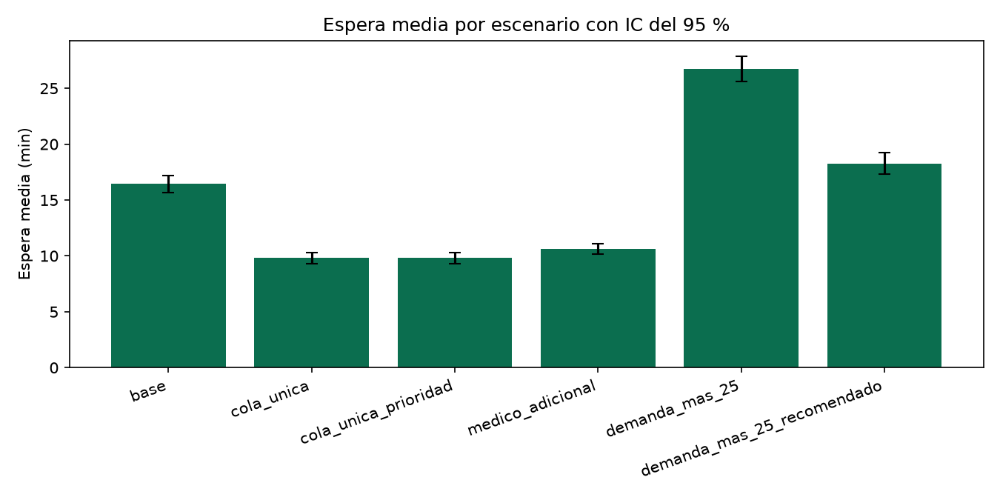
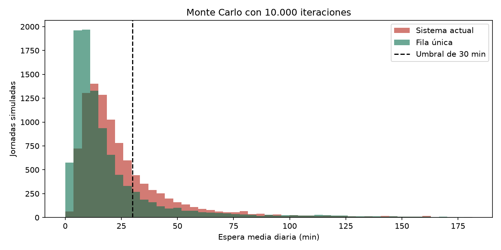

1. Indicadores principales
Cifras leídas de simulacion/salidas/. Cada escenario se corrió con 30 réplicas.
2. Validación contra el CRUD
Compara la espera diaria real (datos del CRUD) con la simulada, 400 jornadas simuladas.
3. Escenarios: espera media con intervalo del 95 %
Barras: espera media en minutos. Un escenario es mejor cuanto menor es la barra.

4. Sensibilidad y cuellos de botella
5. Calentamiento: espera por hora de llegada
La espera sube durante la jornada porque el puesto abre vacío. No se descarta ninguna hora; ver la justificación en el informe.
6. Monte Carlo (10 000 iteraciones)

7. Modelo financiero

8. Revisión de usabilidad SIMULADA
Recorrido automatizado por perfiles de rol contra la API real. No reemplaza pruebas con personas reales.